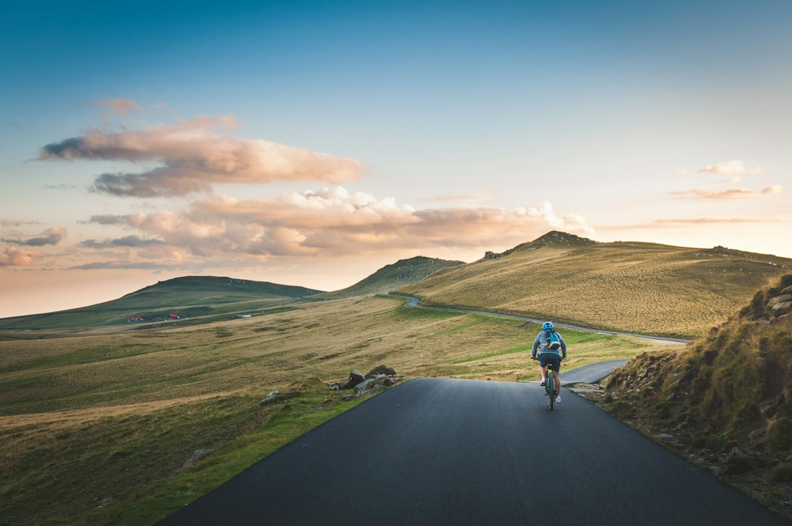

Draußen wartet dein nächstes Abenteuer.
Dein Rad.
Dein Weg.
Vom täglichen Weg bis zum nächsten Gipfel.
Wir finden das Bike, das zu dir passt. Mit ehrlicher Beratung und echter Leidenschaft.
TAUFKIRCHEN (VILS) · ZU HAUSE IM DRAUSSEN
↓✓ Persönliche Beratung✓ Dein Wunschrad Probe fahren✓ Eigene Fachwerkstatt
Dein Radl-Center
Alles für
deinen nächsten Weg.
Finde dein Wunschrad, lass dein Bike wieder fit machen oder lerne uns persönlich kennen.
Weniger Alltag. Mehr draußen.
Der schönste Umweg?
Deiner.
Frische Luft, ein freier Kopf und ein Weg, der noch vor dir liegt. Manchmal braucht es nur ein Fahrrad, um den Tag anders zu erleben.
Finde deinen Begleiter ↗Dein kleiner Bike-Wegweiser
Wo zieht
es dich hin?
Wähle, was du vorhast, und entdecke eine erste Richtung. Das passende Modell finden wir anschließend gemeinsam bei uns im Geschäft.
E-Bike & Trekking
Für den Arbeitsweg, entspannte Touren und alles dazwischen. Lass uns gemeinsam über deine Strecken und die passende Ausstattung sprechen.